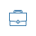

<mat-sidenav-container class="menu-container">

    <mat-sidenav mode="side" opened>
      
      <mat-divider id="sidenav-divider"></mat-divider>
      <mat-nav-list>
          <a mat-list-item routerLinkActive="active"  [routerLink]="[ { outlets: { open: ['jobs'] } }]">
            
            <span>Jobs</span></a>
          <a mat-list-item routerLinkActive="active"  [routerLink]="[ { outlets: { open: ['students'] } }]">
            
            <span>Students</span></a>
          <a mat-list-item routerLinkActive="active"  [routerLink]="[ { outlets: { open: ['mentors'] } }]">
            
            <span>Mentors</span></a>
          <a mat-list-item routerLinkActive="active"  [routerLink]="[ { outlets: { open: ['posts'] } }]">
            
            <span>Posts</span></a>
          <a mat-list-item routerLinkActive="active"  [routerLink]="[ { outlets: { open: ['events'] } }]">
            
            <span>Events</span></a>
          <a mat-list-item routerLinkActive="active"  [routerLink]="[ { outlets: { open: ['fairs'] } }]">
            
            <span>Fairs</span></a>
          <a  class="logout-link" mat-list-item routerLinkActive="active"  [routerLink]="[ { outlets: { open: ['logout'] } }]">
            Logout</a>
       </mat-nav-list>
    </mat-sidenav>

    <mat-sidenav-content>
        <router-outlet name="open"></router-outlet>
    </mat-sidenav-content>

  </mat-sidenav-container>
